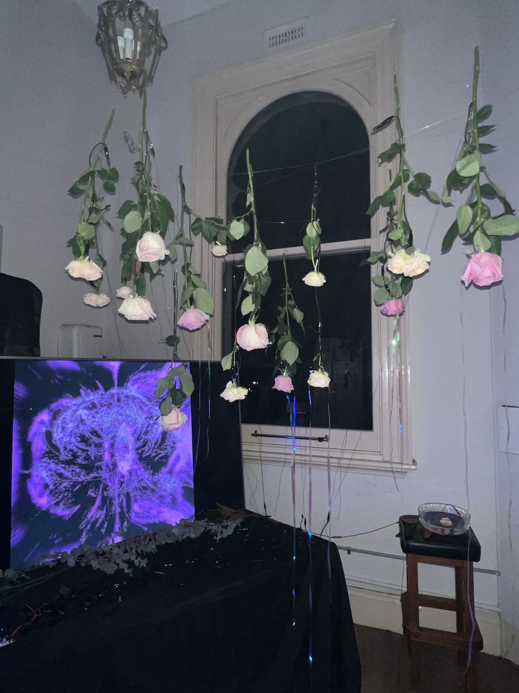
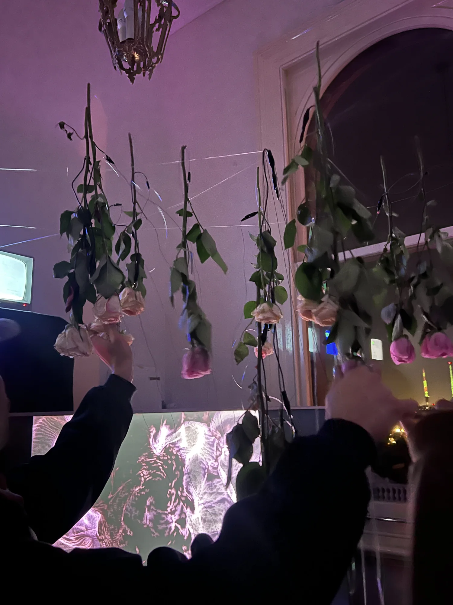
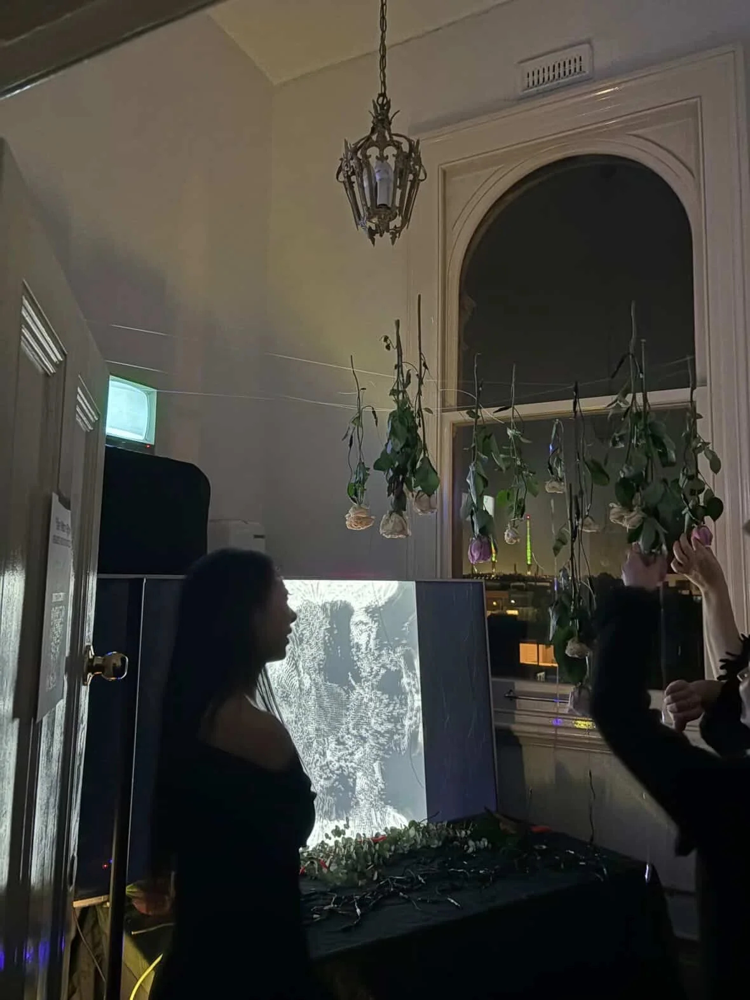
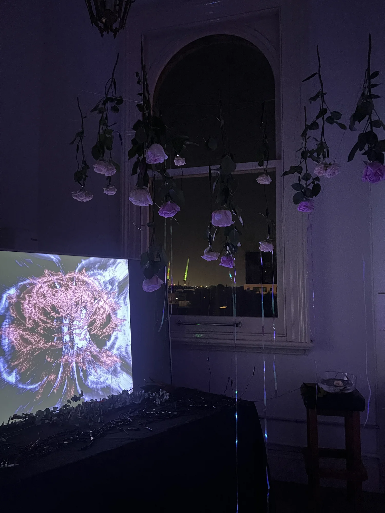
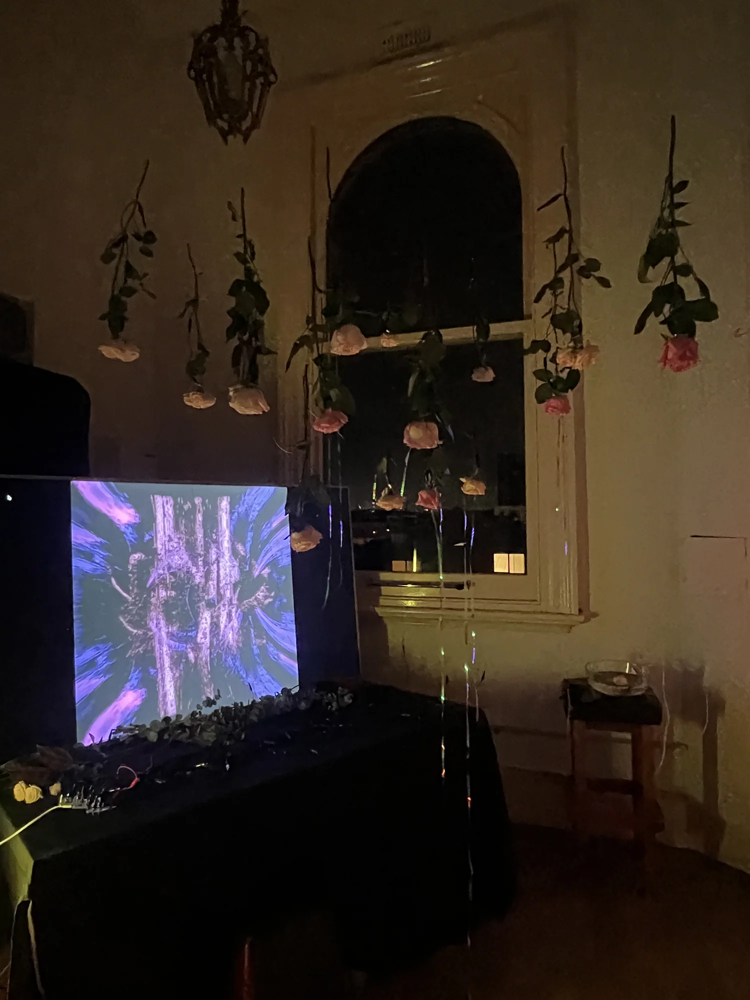
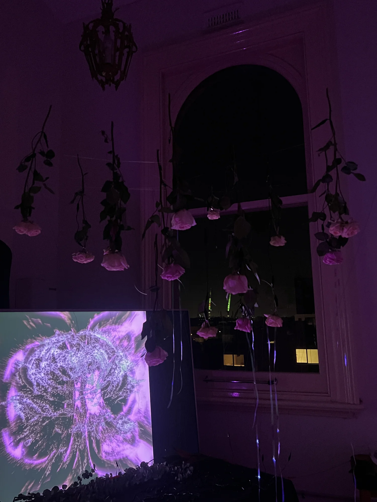
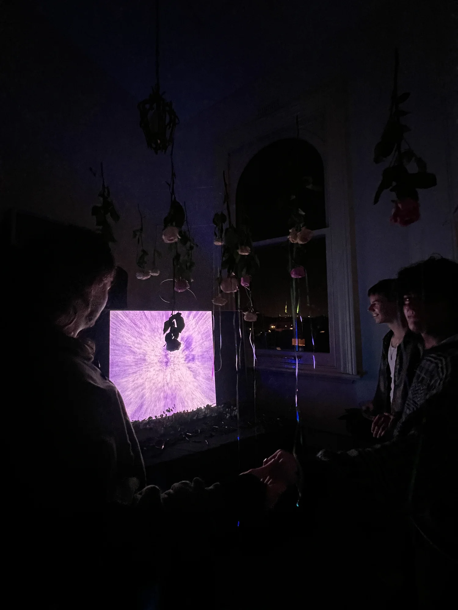

The Meta Rose: Shared Resonance
작품 소장 문의
관심 작품과 설치하려는 공간을 알려주세요.
- 이메일
- minniepark.studio@gmail.com
- 제목
- Artwork acquisition enquiry, The Meta Rose: Shared Resonance
주소를 복사해 사용하는 이메일 서비스에서 작성해도 됩니다.

두 명 이상의 참여자가 생장미, 물과 손과 손의 접촉으로 회로를 완성하며 공동의 오디오비주얼 구성을 활성화합니다. 2026년 4월 Platform Presents: Hybrid에 발표했습니다.
작품 개요
Shared Resonance의 2026년 4월 발표는 한 사람만으로는 작품을 활성화할 수 없다는 구체적인 조건을 통해 Meta Rose의 혼합되고 양가적인 감정에 대한 탐구를 발전시킵니다. 사람과 사람 사이의 연결을 작품의 작동 구조에 포함한 것입니다. 생장미는 촉각적 인터페이스로 작동하며, 전도성 터치는 참여자들을 사운드, 무빙이미지와 빛으로 이루어진 하나의 시스템에 연결합니다.
작품의 초점은 경험이 가능해지는 관계로 옮겨갑니다. Park는 감각적 표현이 다른 사람의 존재와 접촉에 달려 있을 때, 감정의 모순을 마주하는 경험이 어떻게 달라지는지 묻습니다. 장미는 물리적 재료이면서 동시에 서로 반대되는 성질을 함께 품는 감정을 다루는 형상으로 이어집니다.

참여와 구성
4월 설치에서는 공중에 매달린 장미가 열린 회로의 일부를 구성합니다. 두 명 이상의 참여자가 장미, 물과 손을 맞잡는 접촉을 통해 연결되면 설치가 활성화됩니다. 신체 간의 연결은 오디오비주얼 반응을 가능하게 하는 전도성 관계를 실제로 형성합니다. 참여는 개인의 명령을 차례로 입력하는 과정이 아니라, 함께 수행하는 신체적 행위가 됩니다.
그 결과로 나타나는 사운드, 비주얼과 빛은 만남 전체를 통해 구성됩니다. 이러한 관계적 구조는 양가감정에 대한 작품의 관심을 구체화합니다. 서로 다른 감각과 연결이 함께 존재하는 상황을 통해 복합적인 감정을 다루며, 누가 어떻게 연결되어 있는지라는 참여의 조건 자체를 경험 안에 드러냅니다.
전개와 전시
The Meta Kibun Project(2025) 이후 발전한 Shared Resonance의 4월 발표는 터치와 정서에 대한 탐구를 사람 사이의 상호의존으로 확장합니다. 이전 작업이 문화적으로 형성되는 감정에 주목했다면, 4월 설치에서는 집단적으로 완성되는 회로가 인터랙션의 핵심이 됩니다. Meta Rose: The Funeral에 앞서 2026년 4월 18일 멜버른 Fitzroy의 118 Greeves Street에서 열린 Platform Presents: Hybrid에서 선보였습니다.
작품 기술 정보
Platform Presents: Hybrid / 2026년 4월
- 매체
- 두 명 이상의 참여자가 활성화하는 관객 참여형 오디오비주얼 설치.
- 재료
- 매달린 생장미, 물, 전도성 접점, 사운드, 빛과 무빙이미지.
- 설치 크기
- 장소와 설치 구성에 따라 가변.
- 제작 도구
- TouchDesigner, 손과 손의 접촉으로 완성하는 열린 전도성 회로와 터치에 반응하는 오디오비주얼 층위.
- 작가 / 제작
- Minnie Park, 작품 구상, 전시 기획 및 제작.
프로젝트 자료
Shared Resonance, April 2026 project documentation ↗주요 기록
Visual Index →




작품 소장 문의 →
관심 작품과 설치하려는 공간을 알려주세요.
- 이메일
- minniepark.studio@gmail.com
- 제목
- Artwork acquisition enquiry, The Meta Rose: Shared Resonance
주소를 복사해 사용하는 이메일 서비스에서 작성해도 됩니다.